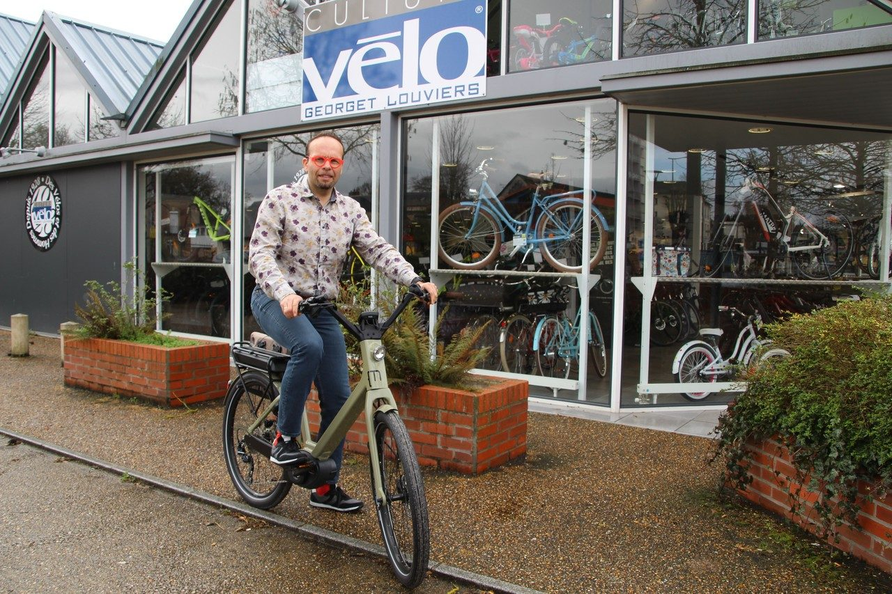
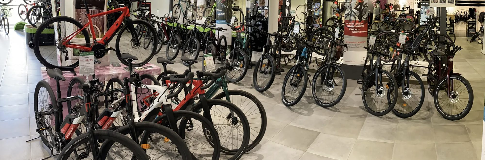

Près d’un siècle de vélo à Louviers. Né d’une histoire de famille commencée en 1928, Georget Cycles est aujourd’hui porté par Cédric Lecerf, un Lovérien pur souche. Sous l’enseigne Culture Vélo, le magasin du boulevard du Docteur Postel réunit plus de 400 vélos en stock et un atelier.
Une histoire de famille commencée en 1928
Tout commence à Rouen, en 1920, quand les grands-parents maternels d’Olivier Georget ouvrent un magasin de cycles. En 1928, ils s’installent à Louviers, rue Saint-Jean. Ses parents reprennent le flambeau en 1956, puis la troisième génération prend le relais en 1984. En 1992, Olivier Georget ouvre l’espace du boulevard du Docteur Postel, sur 1 000 m², agrandi en 2012.
2018 : un Lovérien reprend le guidon
En 2018, après sa rencontre avec Olivier Georget, Cédric Lecerf devient propriétaire du magasin. Lovérien, il perpétue le nom et le savoir-faire de la maison, avec une équipe de vendeurs et de mécaniciens.

Depuis 1928, votre magasin Georget Cycles est le spécialiste du cycle en Normandie.
— La devise de la maisonPlus de 400 vélos en stock
Vélos de ville, de route, VTT, vélos électriques pour tous les usages, vélos cargos et vélos enfants : le magasin compte plus de 400 vélos en stock et 70 000 références d’accessoires au catalogue. On y trouve notamment Trek, Cannondale, Lapierre, Scott, Look, Orbea, Moustache, Winora ou Babboe, et un espace consacré aux cyclistes femmes, Velleo.

Un atelier pour tous les vélos
L’atelier assure l’entretien, la réparation et la personnalisation de tous les types de vélos, avec des techniciens formés par les grands constructeurs. Pratique aussi : le retrait en magasin des accessoires commandés en ligne, et un accès rapide depuis l’A13.
Le vélo en vidéo
Cédric Lecerf fait vivre le magasin en vidéo sur la page Facebook Culture Vélo Georget, suivie par plus de 4 700 personnes.
Georget Cycles — Culture Vélo
1 boulevard du Docteur Postel, 27400 Louviers, près du centre commercial des Tisserands · 02 32 40 06 22